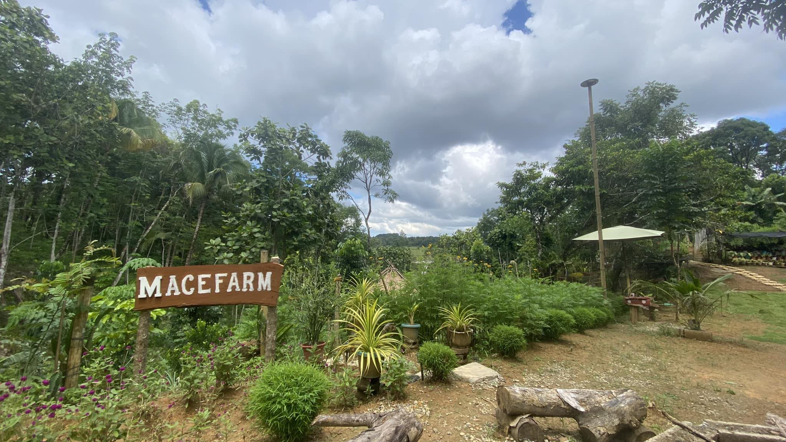
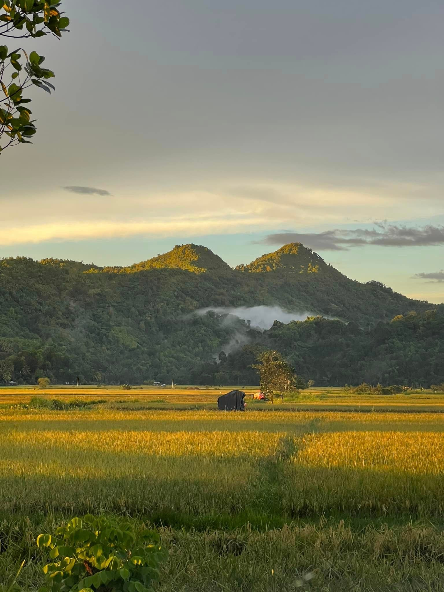
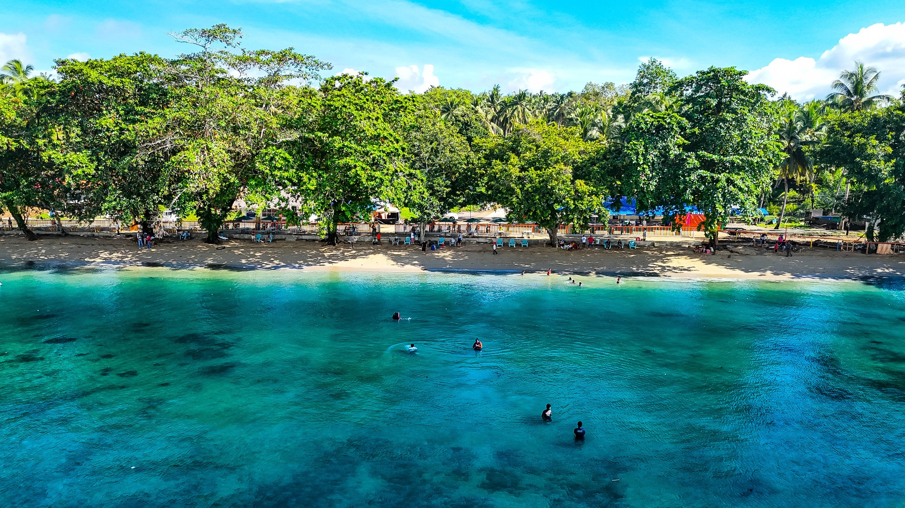
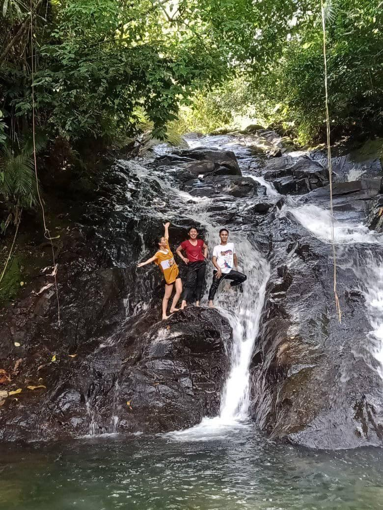

BUUG, Zamboanga Sibugay, August 09 (PIA) - The tourism industry is a vital sector that showcases the richness and beauty of towns and cities. Zamboanga Sibugay province is endowed with natural resources, pristine seas, and breathtaking landscapes, paving the way for a thriving tourism industry.
To foster its tourism industry, the local government of Buug, through its Tourism Office, is taking steps to highlight the various attractions of their town.
A recent initiative they undertook involved a benchmarking activity in Misamis Oriental with the goal of gaining insights on how to improve tourism in Buug.

Mace Farm has become a favorite destination in Buug because it offers a rare mix of adventure and relaxation. Known for its cool climate and stunning landscapes, it is the perfect place to see the natural beauty of Zamboanga Sibugay.
The Famous Sea of Clouds: If you arrive early in the morning, you are treated to a spectacular view of thick white clouds covering the valley below, making the farm feel like a hidden island in the sky.
Refreshing Mountain Air: Because of its high elevation, the air is always crisp and cool. It is a refreshing break from the heat of the city and the perfect spot to breathe in fresh, clean air.
Photogenic Scenery: With its rolling green hills, pine trees, and neat wooden structures, every corner of the farm looks like a postcard. It’s a paradise for photographers and anyone looking for a peaceful "Instagrammable" moment.
A Quiet Escape: It is a place to disconnect from the stress of daily life. Whether you are having a coffee while watching the sunset or walking along the grassy slopes, the farm provides a sense of calm that is hard to find anywhere else.

Dos Mamas Mountain is one of the most iconic natural landmarks in Buug, Zamboanga Sibugay. It is famous for its twin peaks, which resemble two "mamas" (breasts), giving it its unique name.
The Beauty of Dos Mamas Mountain: Dos Mamas is a favorite for hikers and nature lovers who want a bit more adventure. It offers a raw, untouched beauty that showcases the rugged side of Zamboanga Sibugay.
The Twin Peaks Challenge: The mountain is known for its distinct silhouette. Reaching the summit gives hikers a massive sense of accomplishment and a unique vantage point of the surrounding municipalities.
Breathtaking 360-Degree Views: Once you reach the top, you are rewarded with an overlooking view of the lush valleys of Buug and the distant coastline of Sibugay Bay. On a clear day, the horizon seems endless.
Diverse Flora and Fauna: The trail to the top is rich with local plant life and wild orchids. It is a great spot for birdwatching and experiencing the biodiversity of the region firsthand.
A Symbol of Resilience: To the locals, Dos Mamas is more than just a mountain; it is a landmark that represents the strength and natural heritage of the people of Buug.

To round out your tourism section, Silupadak is the perfect addition because it offers a different kind of beauty—focusing on water and lush greenery rather than just mountain peaks.
The Serenity of Silupadak: While Mace Farm and Dos Mamas offer heights, Silupadak offers a cool, refreshing sanctuary hidden within the lush landscape of Buug. It is best known for its crystal-clear waters and its connection to the local ecosystem.
Natural Spring Waters: Silupadak is famous for its cold, refreshing springs. The water is remarkably clear and flows through natural rock formations, providing a perfect spot for visitors to cool off during a hot day.
A Hidden Oasis: Surrounded by towering trees and thick tropical foliage, Silupadak feels like a secret garden. The canopy of leaves provides natural shade, making it a peaceful place for picnics and family gatherings.
The Sound of Nature: Unlike the windy heights of the mountains, the beauty of Silupadak is in its sounds. The gentle trickling of water and the chirping of forest birds create a natural soundtrack that is incredibly relaxing.
Eco-Tourism Hub: It serves as a reminder of Buug's rich natural resources. Locals and visitors alike appreciate Silupadak as a place where the environment is preserved, allowing people to enjoy nature in its purest form.

In Buug, the term Busay (which simply means "waterfall" in the local dialect) usually refers to the stunning hidden falls tucked away in the lush forests. Adding this to your page provides that "adventure" element that every tourism site needs.
The Majesty of Busay Falls: Busay Falls is the hidden gem of Buug. It is a place of raw power and natural elegance, where the forest opens up to reveal a cascading curtain of water.
Cascading Beauty: The falls feature multiple tiers of rushing water that crash into a deep, natural basin. The sight of the white foam against the dark river rocks is a photographer's dream.
The Jungle Trek: Reaching Busay is half the fun. The trail takes you through a vibrant jungle path, crossing small streams and walking under a canopy of ancient trees. It’s a true immersion into the wild.
The "Natural Spa": The pressure from the falling water provides a natural massage for swimmers, while the mist created by the falls keeps the entire area significantly cooler than the surrounding forest.
Pristine Environment: Because it is tucked away, Busay remains clean and untouched. It is a sanctuary for those who want to see nature exactly as it was meant to be.